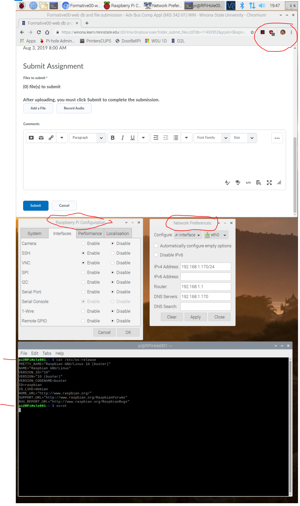

These instructions will show you how to download and create the operating system for a Raspberry Pi single-board computer (SBC); and then start up the device.
SBCs are becoming ubiquitous-examples are Nest thermostats and Ring doorbells.
In later assignments you will configure and add software applications to the Raspberry Pi.
After completing this assignment you will be able to:
- Obtain latest Raspbian operating system
- Create a bootable micro-SD card containing the operating system
- Boot the Raspberry Pi
- Connect to the WSU Guest wireless network
- Configure the Raspberry Pi
- Use a web browser and other software on the Raspberry Pi
- Install an application on the Raspberry Pi to take screen shots
- Upload the screen shot to D2L.
This assignment reviews basic computer concepts that you will need in this course and throughout your career.
You are expected to have a working knowledge of the following utilities.
If you do not understand how to use an item, perform a Google Search,
refer to the WSU Technology Knowledge Base, ask a teaching assistant, or ask the instructor:
For this final Exercise, and to complete this assignment please read all of these instructions.
You are submitting a screen shot of your work to the appropriate D2L Assignment folder.
Make sure that you have the following programs running on your Raspberry Pi, depicting:
- Chromium web browser, open to D2L: https://winona.learn.minnstate.edu/, show this course, with your name in top right,
- Rasberry Pi configuration, 'Interfaces' tab, showing VNC and SSH enabled,
- Network Preferences, interface tab, set to wlan0, showing settings,
- Terminal window, after running
cat /etc/os-release and scrot ,
Your screen shot name is of the format '2019-08-07-125353_1080x1920.scrot.png' and will look something like this:

Suggested Screen Shot Format
Use the File Manager and navigate to the '/home/pi' folder to find your screen shot.
(50) 1. On the Raspberry Pi, use the Chromium browser to go to D2L, then upload your screenshot to the 'FormativePi01' D2L Assignment Folder.
Screen Shot FormativePi01
(10) 2. Assignment submission